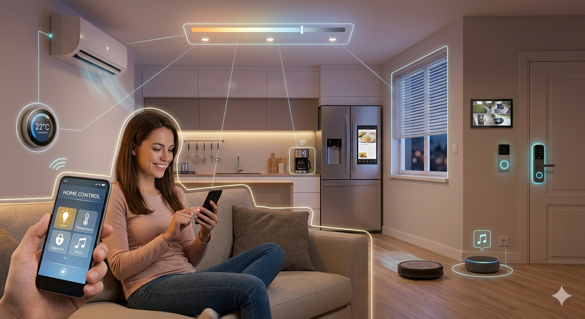

Aplicaciones del IoT en el Mundo Real
El impacto del Internet de las Cosas abarca múltiples sectores socioeconómicos y tecnológicos, transformando la manera en que interactuamos con nuestro entorno:
- Domótica (Smart Homes): Automatización de iluminación inteligente, cerraduras electrónicas, termostatos programables y control por voz para el confort y la eficiencia energética en el hogar.
- Ciudades Inteligentes (Smart Cities): Gestión optimizada del tráfico vehicular, sensores de alumbrado público que se ajustan según la luz ambiental y contenedores de basura inteligentes que notifican cuándo deben ser recolectados.
- Industria 4.0 (IIoT): Mantenimiento predictivo de maquinaria pesada mediante sensores de vibración y temperatura para evitar fallos catastróficos en las líneas de producción.
- Agricultura de Precisión: Sistemas de riego automatizados que reaccionan de forma autónoma ante los niveles de humedad medidos por sensores distribuidos en el suelo.
